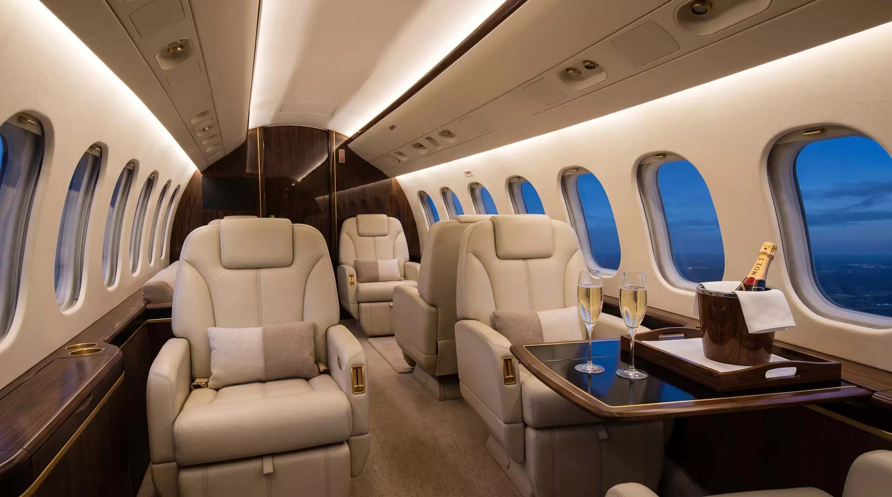

STRATOS
A private charter for people whose scarcest asset is the day itself. No terminals, no queues, no waiting for group four. The aircraft waits for you — never the reverse.
ALT 45,000 FT HDG 042° M 0.85 LOCAL 17:42 · GOLDEN HOUR
The route ritual
Select a route. Watch it draw. Then look at what an ordinary itinerary quietly takes from you — and what we hand back.
GVA → TEB · GREAT CIRCLE · 0h 00
Door to door. Fifteen minutes from car to climb, and the champagne is open before the seatbelt sign is.
The cabin
Walnut veneer, wool carpet, light that follows the hour. A cabin pressurised to a mountain village, not a mountain summit — you land on the day you left.

Circadian cabin lighting drifts from champagne dusk to slate blue and back, tuned to your arrival time zone, so the jet lag stays behind with the terminal.
Forty-seven decibels at cruise — a library with engines. Conversations happen at the volume of confidences.
Six seats convert to full-flat beds with real linen, made while you dine. We do not sell flights. We sell the morning after.
Service
Luxury, done properly, is mostly subtraction. Here is what remains.
The same two pilots and one attendant, flight after flight. They know your seat, your tea, and that you prefer not to be spoken to before the second coffee.
Your own restaurants, plated at altitude. If it isn't good enough on the ground, it does not board the aircraft.
No app, no portal, no ticket queue. A person answers within three rings, at any hour, and the answer is yes. Then we work out how.
One number. Always answered.
+41 22 555 08 45Geneva · New York · Dubai — wheels up within four hours.
DESCENT · FL450 · CLOUD TOPS
Arrival
The car is on the apron, sixty metres from the stair. Whatever you crossed an ocean for begins in about four minutes.
Call +41 22 555 08 45